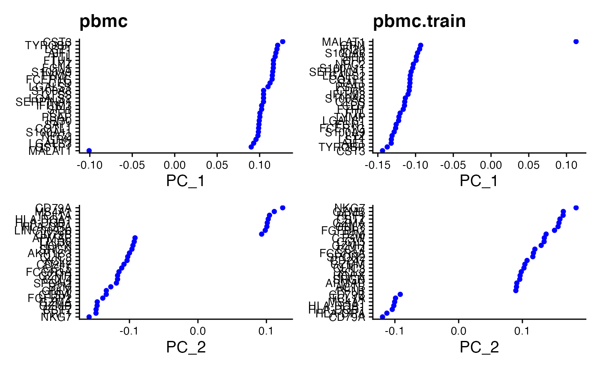
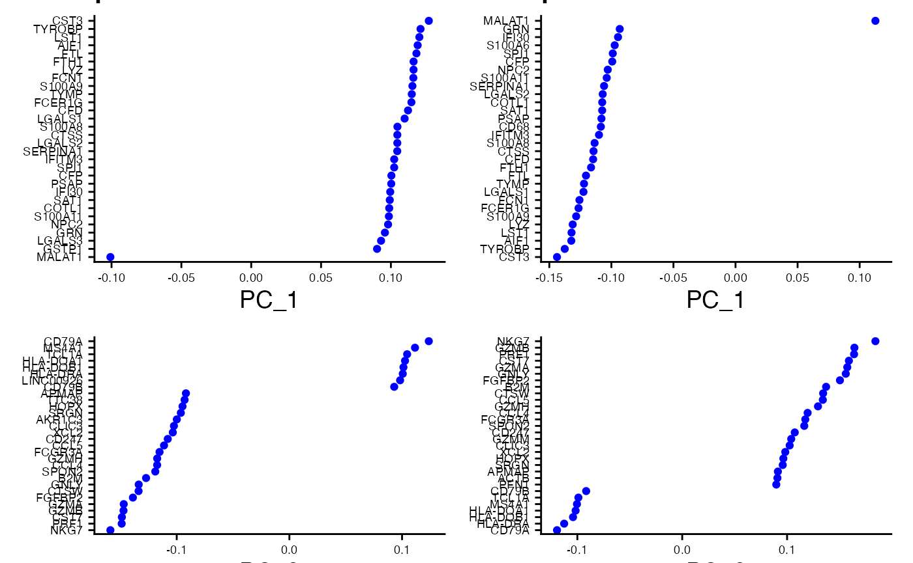
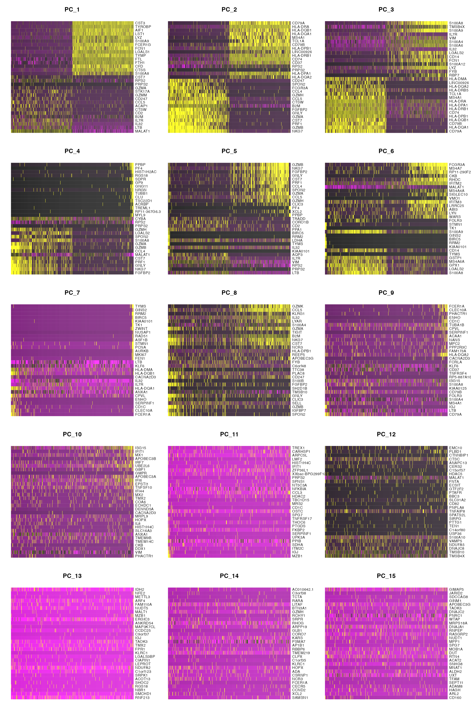
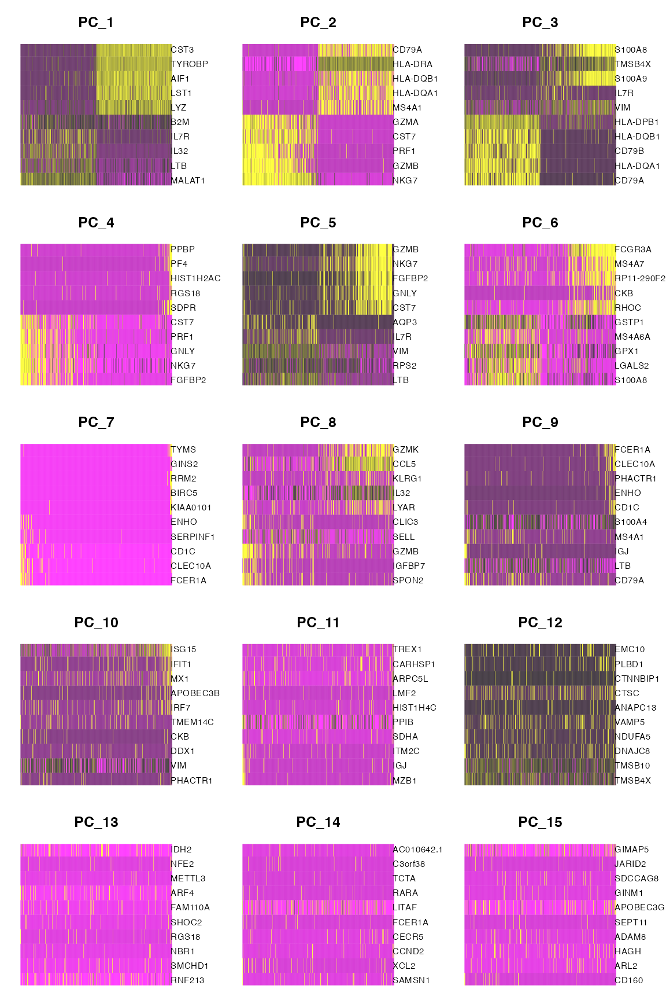

Before using this tutorial, we recommend that you read through our introductory tutorial to understand our method in a simple example with simulated data.
The purpose of this tutorial is to reproduce the analysis from the Seurat clustering tutorial while using countsplit. The Seurat tutorial performs clustering and differential expression on the same dataset. As shown in our introductory tutorial, this can lead to inflated Type 1 error rates during differential expression testing. For more information on why clustering and testing for differential expression on the same datasets creates problems, and why count splitting is needed, please see add link to prepint.
Throughout this tutorial, we refer to the June, 2022 version of the Seurat tutorial. In the event that the Seurat tutorial at the link above gets modified, we have also reproduced the relevant analyses below.
We use the same data and carry out the same processes as in the Seurat tutorial, but we highlight the steps that should be performed on the training set as opposed to on the test set. We also point out some steps in the pipeline where count splitting could potentially cause confusion. For more information on the Seurat methodology, see the website or papers such as Hao et al. (2021), Stuart et al. (2019), Butler et al. (2018).
Install Seurat and countsplit
If you don’t already have Seurat, you will need to run:
if (!require("BiocManager", quietly = TRUE))
install.packages("BiocManager")
BiocManager::install("Seurat")Make sure that remotes is installed by running install.packages("remotes"), then type
remotes::install_github("anna-neufeld/countsplit")Finally, we load the packages that will be used in this tutorial. If any of the packages besides Seurat and countsplit are not installed, they can be installed from cran with install.packages().
Loading the data
We first load the pbmc data that was used in the Seurat clustering tutorial. For convenience, we included the pbmc dataset raw counts (obtained from 10x genomics) in the countsplit package, and can be loaded as follows:
data(pbmc.counts, package="countsplit")Seurat objects cannot handle gene names that have underscores in them. To avoid issues later in the tutorial (where we will need to use gene names to map between the training and test sets), we run the following code to replace all underscores with dashes in the gene names of the raw counts matrix.
rownames(pbmc.counts) <- sapply(rownames(pbmc.counts), function(u) stringr::str_replace_all(u, "_","-"))Applying count splitting and creating a Seurat object
We now count split to obtain two raw count matrices. This is the only place in this tutorial where we use the countsplit package.
set.seed(1)
split <- countsplit(pbmc.counts, epsilon=0.5)
Xtrain <- split$train
Xtest <- split$testWe must store the training matrix in a Seurat object so that we can apply the preprocessing steps from the Seurat clustering tutorial. As recommended by Seurat, this code will remove any genes that were not expressed in at least 3 cells and will remove any cells that did not have at least 200 expressed genes.
pbmc.train <- CreateSeuratObject(counts = Xtrain, min.cells = 3, min.features = 200)For the sake of comparing our analysis to the one in the Seurat tutorial, we also create a pbmc object that contains the full expression matrix, as opposed to the training set. Any time we apply operations to pbmc.train, we will apply the same operations to pbmc for the sake of comparison.
pbmc <- CreateSeuratObject(counts = pbmc.counts, min.cells = 3, min.features = 200)The Seurat tutorial then recommends further subsetting the cells to exclude cells that have unique feature counts over 2,500 or less than 200, and to exclude cells that have >5% mitochondrial counts. We do this for both pbmc.train and pbmc.
# Apply to training object
pbmc.train[["percent.mt"]] <- PercentageFeatureSet(pbmc.train, pattern = "^MT-")
pbmc.train <- subset(pbmc.train, subset = nFeature_RNA > 200 & nFeature_RNA < 2500 & percent.mt < 5)
pbmc[["percent.mt"]] <- PercentageFeatureSet(pbmc, pattern = "^MT-")
pbmc <- subset(pbmc, subset = nFeature_RNA > 200 & nFeature_RNA < 2500 & percent.mt < 5)We note that now the dimensions of Xtrain and Xtest do not match up with the dimensions of our new Seurat object.
dim(Xtrain)## [1] 32738 2700
dim(Xtest)## [1] 32738 2700
dim(pbmc.train)## [1] 12421 2615To avoid any confusion later, we create Xtestsubset, which contains the same genes and the same cells as pbmc.train.
rows <- rownames(pbmc.train)
cols <- colnames(pbmc.train)
Xtestsubset <- Xtest[rows,cols]
dim(Xtestsubset)## [1] 12421 2615We also note that pbmc.train and pbmc do not have the same dimensions, as the original requirement about the number of non-zero counts for each gene/cell was applied separately to the full data and the training set. Later, when it is needed to make comparisons, we will subset pbmc appropriately.
dim(pbmc.train)## [1] 12421 2615
dim(pbmc)## [1] 13714 2638Preprocessing workflow
For our count splitting analysis, all steps in the preprocessing workflow are performed on pbmc.train. Importantly, the test set is left untouched throughout this section. We perform the workflow on pbmc in parallel for the sake of comparison.
We take this time to point out some intricacies of the Seurat object that could become confusing in future analyses. A single assay within a Seurat object has three slots: counts, data, and scale.data. At this point in the analysis, data and counts both store the raw counts, and scale.data is empty.
all.equal(GetAssayData(pbmc.train, "counts"), GetAssayData(pbmc.train, "data"))## [1] TRUE
GetAssayData(pbmc.train, "scale.data")## <0 x 0 matrix>These assays will change as we run further preprocessing steps, and this will be important to keep in mind. We next normalize and compute the set of highly variable features, as in the Seurat tutorial. Note that normalizing changes the data slot within of pbmc.train such that it stores normalized data, rather than counts.
pbmc.train <- NormalizeData(pbmc.train)
all.equal(GetAssayData(pbmc.train, "counts"), GetAssayData(pbmc.train, "data"))## [1] "Attributes: < Component \"x\": Mean relative difference: 0.7230153 >"Computing the set of highly variable features does not alter the dimension of the dataset. All features are retained, but these highly variable features are the ones that will be used downstream during dimension reduction.
dim(pbmc.train)## [1] 12421 2615
pbmc.train <- FindVariableFeatures(pbmc.train, selection.method = "vst", nfeatures = 2000)
dim(pbmc.train)## [1] 12421 2615As in the Seurat tutorial, we make a plot that labels the top 10 most highly variable genes. We compare the plot constructed using pbmc to the one constructed using pbmc.train (which means we first need to catch up on preprocessing steps for pbmc).
pbmc <- NormalizeData(pbmc)
pbmc <- FindVariableFeatures(pbmc, selection.method = "vst", nfeatures = 2000)
top10 <- head(VariableFeatures(pbmc), 10)
plot1 <- VariableFeaturePlot(pbmc) + ggtitle("pbmc")
plot2 <- LabelPoints(plot = plot1, points = top10)
top10.train <- head(VariableFeatures(pbmc.train), 10)
plot1.train <- VariableFeaturePlot(pbmc.train) + ggtitle("pbmc.train")
plot2.train <- LabelPoints(plot = plot1.train, points = top10.train)
plot2 + plot2.train & guides(col="none")
The analysis on pbmc and the analysis on pbmc.train identify similar sets of genes as the top 10 most highly variable genes. This is comforting, as it shows that the training set is retaining a lot of info compared to the full dataset. The overlapping genes are: PPBP, LYZ, FTL, S100A9, S100A8, GNLY, FTH1, IGLL5, PF4. The only difference is that on the training set we selected HLA-DRA instead of GNG11.
sort(top10)## [1] "FTH1" "FTL" "GNG11" "GNLY" "IGLL5" "LYZ" "PF4" "PPBP"
## [9] "S100A8" "S100A9"
sort(top10.train)## [1] "FTH1" "FTL" "GNLY" "HLA-DRA" "IGLL5" "LYZ" "PF4"
## [8] "PPBP" "S100A8" "S100A9"Comparing principal components on pbmc and pcmc.train
We continue following the preprocessing steps from the Seurat tutorial on both pbmc and pbmc.train. The next step is to scale the data and to compute principal components. In this section, we show that pbmc and pbmc.train have very similar principal components. This is comforting, as it suggests that we do not lose too much information when we count split and estimate principal components on only the training set.
Below, we compare loading plots for the first two principal components for pbmc and pbmc.train. We note that ScaleData finally fills in the scale.data slot in the pbmc and pbmc.train objects, and some downstream functions will access this slot.
all.genes <- rownames(pbmc)
pbmc <- ScaleData(pbmc,features = all.genes)
pbmc <- RunPCA(pbmc, features = VariableFeatures(object = pbmc))
p1 <- VizDimLoadings(pbmc, dims = 1, reduction = "pca")+theme(axis.text = element_text(size=7))+ggtitle("pbmc")
p2 <- VizDimLoadings(pbmc, dims = 2, reduction = "pca")+theme(axis.text = element_text(size=7))
all.genes.train <- rownames(pbmc.train)
pbmc.train <- ScaleData(pbmc.train,features = all.genes.train)
pbmc.train <- RunPCA(pbmc.train, features = VariableFeatures(object = pbmc.train))
p1.train <- VizDimLoadings(pbmc.train, dims = 1, reduction = "pca")+theme(axis.text = element_text(size=7))+ggtitle("pbmc.train")
p2.train <- VizDimLoadings(pbmc.train, dims = 2, reduction = "pca")+theme(axis.text = element_text(size=7))
p1+p1.train+p2+p2.train+plot_layout(nrow=2, ncol=2)
We can see that we obtain very similar principal components on the training set to those obtained on the full data. On both datasets, PC_1 is dominated by the gene MALAT1 in one direction and genes like CST3 and TYROBF in the other direction. (The fact that MALAT1 has a positive loading in pbmc.train and a negative loading in pbmc is simply due to a sign flip of the first principal component.) The second principal component is dominated by CD79A and HLA-D0A1 and HLA-DOB1, with NKG7 having a lot of importance with the opposite sign. (The sign flip between the two datasets is once again unimportant.)
Now that we have convinced ourselves that the training set is retaining a lot of the signal of the full dataset (and is thus able to estimate very similar principal components), we move on to clustering. We skip the next several visualizations and steps of the Seurat tutorial for brevity. We will return to the principal component heatmaps at the end of this document. As in the Seurat tutorial, we retain 10 principal components for clustering.
pbmc <- FindNeighbors(pbmc, dims = 1:10)
pbmc <- FindClusters(pbmc, resolution=0.5)
pbmc.train <- FindNeighbors(pbmc.train, dims = 1:10)
pbmc.train <- FindClusters(pbmc.train, resolution=0.5)Finally, we visualize the clusters that we have computed on the training set.

We want to know how similar these clusters are to the ones computed on the full data. Looking at two UMAP plots could be potentially misleading, as the UMAP dimensions on the full dataset are different than those on the training set. Further complicating our ability to compare the two clusterings, the training set has slightly fewer cells in it due to the preprocessing pipeline.
## [1] 2615
length(clusters.full)## [1] 2638To compare the two clusterings, we compute the adjusted Rand index (Hubert and Arabie (1985)) using only the cells that are included in the training set.
clusters.full.subset <- clusters.full[colnames(pbmc.train)]
adjustedRandIndex(clusters.train, clusters.full.subset)## [1] 0.7692816The high adjusted Rand index shows that the clusters obtained from the training set are similar to those obtained on the test set. The confusion matrix below shows that we can easily map the first 7 clusters on the full data to a corresponding cluster on the training data, and the full data has two additional (small) clusters that seem to have combined with cluster 6 in the training data.
table(clusters.train, clusters.full.subset)## clusters.full.subset
## clusters.train 0 1 2 3 4 5 6 7 8
## 0 630 0 84 0 6 0 0 0 0
## 1 0 459 0 0 0 3 0 1 1
## 2 61 0 380 0 18 0 0 0 0
## 3 11 0 5 1 249 0 143 0 0
## 4 0 0 2 342 1 0 0 2 0
## 5 0 9 0 0 0 159 0 0 7
## 6 0 1 0 0 0 0 0 29 0Overall, in this section, we saw that we get very similar estimated clusters when we use the training data obtained from count splitting compared to using the full data.
Finding differentially expressed features manually
Now that we computed clusters from the training set, it is time to look for differentially expressed genes across the clusters. The “safest” way to perform this analysis is to extract the cluster labels from pbmc.train and write our own analysis functions to see how the columns of Xtestsubset (created above) vary across these clusters. This approach is the safest because we know for sure that the clusters were obtained using only the training data and that the differential expression analysis uses only the test data.
First, we extract the clusters and verify that we have a cluster for every cell in Xtestsubset.
## [1] 2615
NCOL(Xtestsubset)## [1] 2615As in the Seurat tutorial, we will first test for genes that distinguish cluster 2 from all other clusters. The table in the previous section showed that the training set cluster 2 maps to the full dataset cluster 2. We reproduce the analysis from the Seurat tutorial “by hand” below, both using the “naive method” (which uses the full data for clustering and differential expression testing) and using count splitting.
By default, the FindMarkers() function in the Seurat package applies a Wilcoxon test for a difference in means to the log-normalized data. We will use this method below to test for differential expression, and so we first need to normalize our test dataset by size factors and log transform it.
## Log normalize the test set
sf.test <- colSums(Xtestsubset)
Xtestsubset_norm <- t(apply(Xtestsubset, 1, function(u) u/sf.test))
Xtestsubset_lognorm <- log(Xtestsubset_norm +1)
## Log normalize the full dataset
Xsubset <- pbmc.counts[rownames(pbmc),colnames(pbmc)]
sf.full <- colSums(Xsubset)
Xsubset_norm <- t(apply(Xsubset, 1, function(u) u/sf.full))
Xsubset_lognorm <- log(Xsubset_norm +1)
### Do the count splitting analysis
cluster2.train <- clusters.train==2
pvals2.countsplit <- apply(Xtestsubset_lognorm, 1, function(u) wilcox.test(u~cluster2.train)$p.value)
### Do the naive method analysis
clusters.full <- Idents(pbmc)
cluster2.full <- clusters.full==2
pvals2.naive <- apply(Xsubset_lognorm, 1, function(u) wilcox.test(u~cluster2.full)$p.value)
head(sort(pvals2.countsplit))
## LTB IL32 IL7R CD3D HLA-DRA TYROBP
## 1.024995e-69 2.795907e-65 1.555729e-52 1.822045e-52 2.461172e-50 3.652260e-47
head(sort(pvals2.naive))
## IL32 LTB CD3D IL7R LDHB CD2
## 2.593535e-91 7.994465e-87 3.922451e-70 1.130870e-66 4.082189e-65 5.526492e-61We identify LTB, IL32, CD3D, and IL7R as the top 4 markers of cluster 2, which is the same as in the Seurat tutorial (although the order is slightly different and the p-values are slightly different). While the takeaways of the two analyses are similar in this case, as explained in our preprint, the naive method used in the Seurat tutorial cannot reliably determine which genes are differentially expressed, whereas count splitting can (under a Poisson assumption).
Finding differentially expressed features using Seurat
It would be nice to be able to make a Seurat object containing the training set clusters but the test set counts. This would allow us to use some of Seurat’s nice visualization features for differential expression testing. We note that care should be taken in this section, as we are mixing-and-matching pieces of Seurat objects and Seurat functions not explicitly mentioned in this tutorial may have unexpected behavior.
We first let pbmc.test equal pbmc.train. This ensures that our test set object gets the same cluster information and UMAP information as the training set, such that we can still visualize the training set clusters. We then update the counts slow of this object to store the test set counts. Unfortunately, once we do this, the data and scale.data slots are not automatically updated to store the normalized or scaled counts. We run normalize and scale functions to remedy this.
pbmc.test <- pbmc.train
pbmc.test <- SetAssayData(object = pbmc.test, slot = "counts", new.data = Xtestsubset)
pbmc.test <- NormalizeData(pbmc.test)
pbmc.test <- ScaleData(pbmc.test, features = all.genes)We first verify that the Seurat FindMarkers function returns the same information as the manual differential expression test above.
cluster2.markers <- FindMarkers(pbmc.test, ident.1 = 2, min.pct = 0)
head(sort(pvals2.countsplit), n=10)
## LTB IL32 IL7R CD3D HLA-DRA TYROBP
## 1.024995e-69 2.795907e-65 1.555729e-52 1.822045e-52 2.461172e-50 3.652260e-47
## LDHB HLA-DPB1 HLA-DRB1 CD74
## 6.409036e-45 1.208847e-43 5.578914e-43 3.876074e-39
head(cluster2.markers, n = 10)
## p_val avg_log2FC pct.1 pct.2 p_val_adj
## LTB 1.024995e-69 1.2573889 0.904 0.521 1.273146e-65
## IL32 2.795907e-65 1.2014270 0.800 0.363 3.472796e-61
## IL7R 1.555729e-52 1.1410766 0.575 0.213 1.932370e-48
## CD3D 1.822045e-52 0.9193555 0.758 0.327 2.263162e-48
## HLA-DRA 2.461172e-50 -3.3849585 0.205 0.524 3.057022e-46
## TYROBP 3.652260e-47 -3.5375959 0.065 0.404 4.536472e-43
## LDHB 6.409036e-45 0.8943173 0.813 0.439 7.960663e-41
## HLA-DPB1 1.208847e-43 -2.6613164 0.155 0.469 1.501509e-39
## HLA-DRB1 5.578914e-43 -2.5094670 0.107 0.433 6.929570e-39
## CD74 3.876074e-39 -2.3598621 0.595 0.704 4.814471e-35We can also verify that the top marker genes selected with count splitting still match up to those obtained from the naive method used in the Seurat tutorial.
head(sort(pvals2.naive), n=10)
## IL32 LTB CD3D IL7R LDHB CD2
## 2.593535e-91 7.994465e-87 3.922451e-70 1.130870e-66 4.082189e-65 5.526492e-61
## AQP3 CD3E TNFRSF4 HLA-DRA
## 2.610017e-59 2.215957e-55 8.687757e-54 5.941727e-53
head(FindMarkers(pbmc, ident.1=2), n=10)
## p_val avg_log2FC pct.1 pct.2 p_val_adj
## IL32 2.593535e-91 1.2154360 0.949 0.466 3.556774e-87
## LTB 7.994465e-87 1.2828597 0.981 0.644 1.096361e-82
## CD3D 3.922451e-70 0.9359210 0.922 0.433 5.379250e-66
## IL7R 1.130870e-66 1.1776027 0.748 0.327 1.550876e-62
## LDHB 4.082189e-65 0.8837324 0.953 0.614 5.598314e-61
## CD2 5.526492e-61 1.2392186 0.657 0.245 7.579031e-57
## AQP3 2.610017e-59 1.2403610 0.424 0.111 3.579377e-55
## CD3E 2.215957e-55 0.8822753 0.833 0.410 3.038963e-51
## TNFRSF4 8.687757e-54 0.9481583 0.210 0.025 1.191439e-49
## HLA-DRA 5.941727e-53 -3.4362399 0.345 0.607 8.148484e-49Comparing visualizations on training set and test set
The main reason it is useful to store the test matrix in a Seurat object is that it lets us use many visualization features from the Seurat package.
Consider the following sets of heatmaps. Each individual heatmap plots 500 randomly selected cells from the relevant dataset, ordered by its coordinates along the specified principal component. The genes with the highest positive loadings and the highest negative loadings are plotted for each principal component. As both pbmc.train and pbmc.test contain information on the principal components computed using the training set, both sets of heat maps plot the same principal components and display the same genes in each panel.
The first set of heatmaps displays expression counts from the training set. While the association between the genes and the principal components clearly decreases as we move from PC1 to PC15, PC15 still clearly shows association between the top genes and the PC. This association is due to the fact that the training data itself was used to construct the PCs, and so there will always be some genes that appear to be associated with the PC.
DimHeatmap(pbmc.train, dims = 1:15, cells = 500, balanced = TRUE, nfeatures=10)
The following plot still shows principal components computed on the training set, but the expression count values inside of the heat map are now test set counts. For the first 6 or so PCs, the association between test set counts and the PC seems almost as strong as the association between the training set counts and the PCs. This suggests that these PCs are measuring true signal in the data. On the other hand, consider the PCs 10-15. The patterns seen in the training set essentially disappear in the top genes plotted for the test set. This suggests that any association seen in the initial heatmaps was due to overfitting; these PCs do not measure anything useful or interesting.
DimHeatmap(pbmc.test, dims = 1:15, cells = 500, balanced = TRUE, nfeatures=10)
Our results using count splitting line up with insights from the Seurat tutorial obtained using Jackstraw: the original Seurat tutorial suggested that it would be reasonable to keep 7-12 PCs, and chose to keep 10 PCs. However, Jackstraw requires re-computing PCs for many permuted versions of the data, while our heatmaps obtained using count splitting requires only a single principal component calculation.
While the rest of this tutorial focused on how count splitting and the naive method provided similar conclusions (i.e. count splitting does not cause us to miss true signal when it is present), these heatmaps are the first place in this tutorial where we have seen ad advantage of count splitting (apart from the fact that we know theoretically that the naive method fails to control the Type 1 error rate).